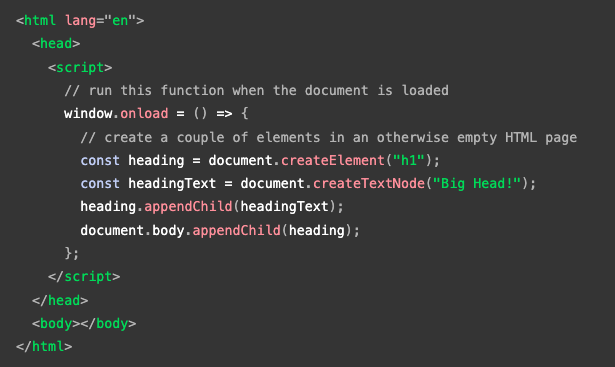

HTML + CSS + JavaScript = Dog. The HTML represents the body. His four legs, ears, eyes, tails etc. The CSS represents the look. The coating and the eye color, size, shape of his head, ears, nose, teeth, etc. The JavaScript represents how the dog behaves. When he sees a stranger, he barks; when hungry, he barks; when in pain, he is quiet and following you everywhere. When you tell him to sit, run, or roll, he obeys your command, and when you put his food in front of him, he looks at you until you signal him to do it. , etc. HTML is the structure of a website, while CSS beautify the page, and JavaScript controls the behaviour of the webpage.
Imagine reading a news page in the newspaper. We need to understand the context of the paper; to do that, we need to read from left to right, top to bottom, to understand it. This is how a computer understands a bunch of lines of code. Read it line by line and action. This action is called Control Flow, the order in which statements are executed in a program. The default control flow is for statements to be read and executed in a program file from left to right, top to bottom. Loop is used to perform a repeated action based on its condition. And it will carry on until it meets the condition. It is like adding milk and sugar to the coffee or tea. You add and taste until it tastes as you like it, then stop and start enjoying your coffee.
A web page is a document that can be either displayed in the browser
window or as an HTML source. It is the same document in both cases.
Still, the Document Object Model (DOM) representation allows it to be
manipulated, and it can be modified with a scripting language such as
JavaScript. As it is generally not recommended to mix the structure of
the page (written in HTML) and manipulation of the DOM (written in
JavaScript), the JavaScript parts will be grouped together here, and
separated from the HTML. For example, the following function creates a
new h1 element, adds text to that element, and then adds it to the
tree for the document:

An Array is a collection of data and a data structure that is stored
in a sequence of memory locations. One can access the elements of an
array by calling the index number such as 0, 1, 2, 3, …, etc. The
array can store data types like Integer, Float, String, and Boolean
all the primitive data types can be stored in an array. The object can
contain anything in the real world such as person names, cars, and
game characters. Objects are very easy to use in some situations if
you know where the data is being processed. The character set of
objects is known as Properties. The properties of an object can be
called by using DOT notation and [] notation.
Click here to read more
The Functions are the basic building block of JavaScript. Functions allow us to encapsulate a block of code and reuse it multiple times. Functions make JavaScript code more readable, organized, reusable, and maintainable. With using functions, we can re-execute blocks of code when we are writing programs, without having to re-write the block of code entirely. We need a way of grouping code together and giving it a name, so that we can call it by that name later, and that's what we call a function.